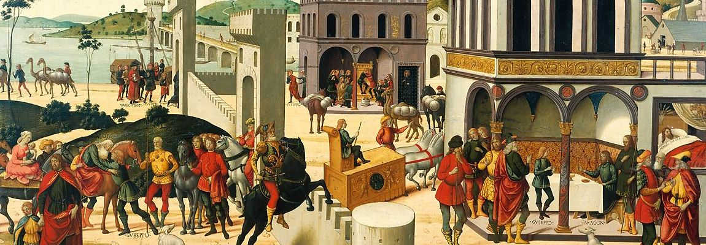
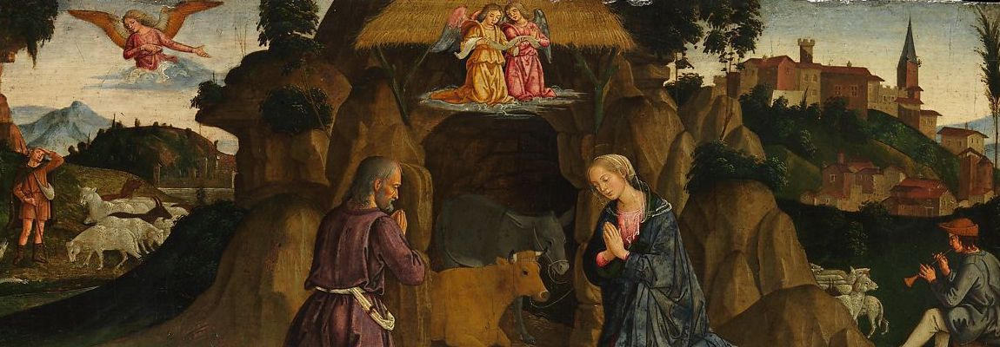
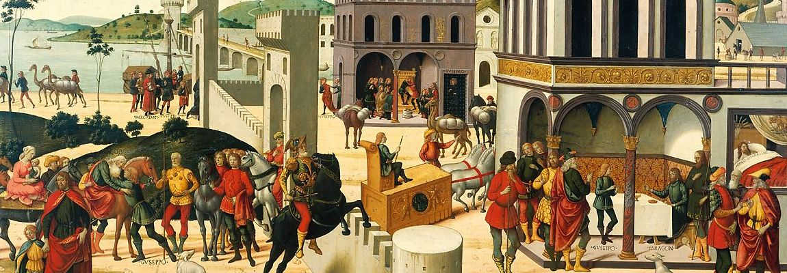
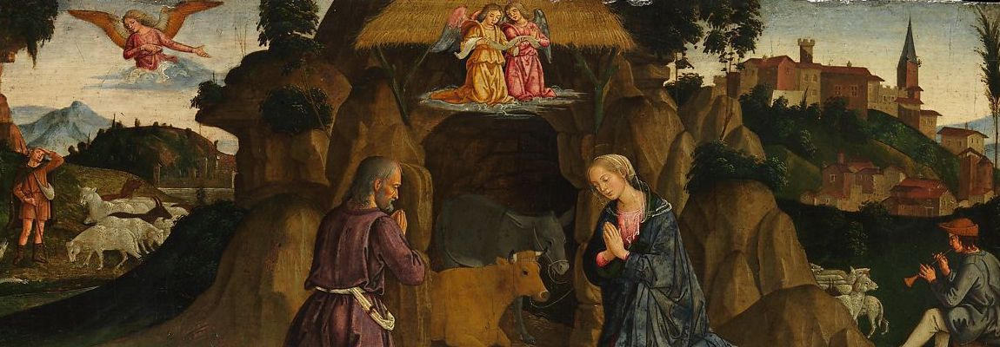

The Metropolitan Museum Of Art
~ Welcome To The Museum Tour ~
~ Welcome To The Museum Tour ~
『The Metoropolitan Museum Of Art』にようこそ。
こちらはオンラインで実際に美術館に訪れたような 体験が得られる、アート作品の閲覧サイトです。
Metoropolitan美術館で展示されている作品が5つの ジャンルで区分けされていて、メニューバーのDoorsをクリックすることで 閲覧しに行くことが出来ます。
お目当ての作品があれば、右上の検索ボタンからお探しできます。
Network1-group2


 


